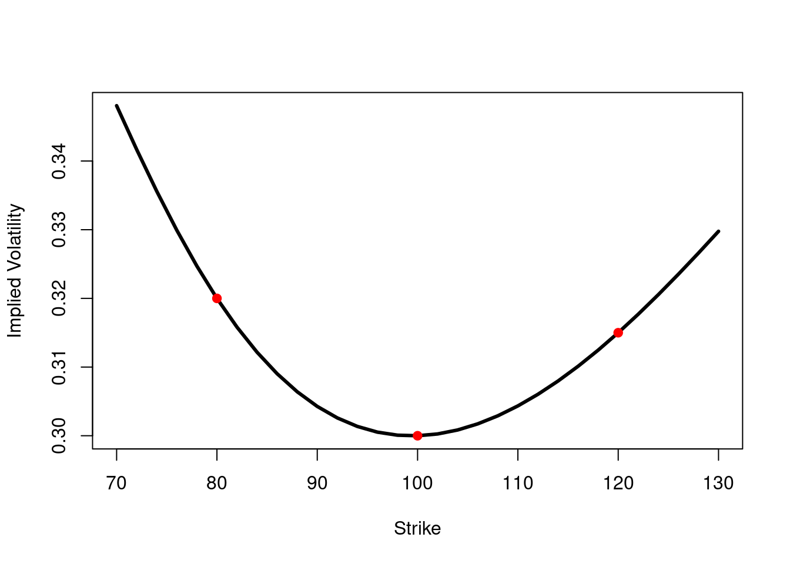

## Loading required package: timeDate## Loading required package: timeSeries## Loading required package: fBasics## Loading required package: fAsianOptions## Loading required package: lubridate## Loading required package: timechange##
## Attaching package: 'lubridate'## The following objects are masked from 'package:base':
##
## date, intersect, setdiff, union## Loading required package: Hmisc## Loading required package: lattice## Loading required package: survival## Loading required package: Formula## Loading required package: ggplot2##
## Attaching package: 'Hmisc'## The following objects are masked from 'package:base':
##
## format.pval, units## Loading required package: xtable##
## Attaching package: 'xtable'## The following objects are masked from 'package:Hmisc':
##
## label, label<-## The following object is masked from 'package:timeSeries':
##
## align## The following object is masked from 'package:timeDate':
##
## align## Loading required package: empfin## Loading required package: fImport## Loading required package: RCurlIf you want to know the value of a security, use the price of another
security that’s similar to it. All the rest is strategy.
E. Derman
This chapter presents a practical method for pricing and hedging derivatives, taking into account an uncertain volatility. This method is very popular for Foreign Exchange derivatives, but beyond that it illustrates an important principle of asset pricing, which is to relate the price of a complex derivative to the known price of simpler, liquid instruments.
Assume a Ito dynamic for volatility, and consider a derivative security \(O(t)\), which is now subject to two sources of randomness: the underlying asset \(S_t\) and the volatility \(\sigma_t\). An extended version of Ito’s lemma give: \[\begin{aligned} dO(t,K) &=& \frac{\partial O}{\partial t} dt + \frac{\partial O}{\partial S} dS_t + \frac{\partial O}{\partial \sigma} d\sigma_t \\ & & + \frac{\partial^2 O}{\partial S^2} (dS_t)^2 + \frac{\partial^2 O}{\partial \sigma^2} (d\sigma_t)^2 + \frac{\partial^2 O}{\partial S \partial \sigma} dS_t d\sigma_t\end{aligned}\]
We now construct a portfolio made of option \(O(t,K)\), and a hedge made of \(\Delta_t\) units of the underlying asset and 3 delta-hedged vanilla options \(C_i(t,K_i)\):
\[\begin{aligned} \lefteqn{dO(t,K) - \Delta_t dS_t - \sum_{i=1}^3 x_i dC_i(t,K_i) =} \\ && \left[ \frac{\partial O}{\partial t} - \sum_i x_i \frac{\partial C_i}{\partial t} \right] dt \\ && + \left[ \frac{\partial O}{\partial S} - \Delta_t - \sum_i x_i \frac{\partial C_i}{\partial S} \right] dS_t \\ && + \left[ \frac{\partial O}{\partial \sigma} - \sum_i x_i \frac{\partial C_i}{\partial \sigma} \right] d\sigma_t \\ && + \frac{1}{2} \left[ \frac{\partial^2 O}{\partial S^2} - \sum_i x_i \frac{\partial^2 C_i}{\partial S^2} \right] (dS_t)^2 \\ && + \frac{1}{2} \left[ \frac{\partial^2 O}{\partial \sigma^2} - \sum_i x_i \frac{\partial^2 C_i}{\partial \sigma^2} \right] (d\sigma_t)^2 \\ && + \left[ \frac{\partial^2 O}{\partial S \partial \sigma} - \sum_i x_i \frac{\partial^2 C_i}{\partial S \partial \sigma} \right] dS_t d\sigma_t \end{aligned}\]
We can choose \(\Delta_t\) and \(x_i\) to zero out the terms \(dS_t, d\sigma_t, (d\sigma_t)^2\) and \(dS_t d\sigma_t\). We are left with:
\[\begin{aligned} \lefteqn{dO(t,K) - \Delta_t dS_t - \sum_{i=1}^3 x_i dC_i(t,K_i) =} \\ && \left[ \frac{\partial O}{\partial t} - \sum_i x_i \frac{\partial C_i}{\partial t} \right] dt \\ && +\frac{1}{2} \left[ \frac{\partial^2 O}{\partial S^2} - \sum_i x_i \frac{\partial^2 C_i}{\partial S^2} \right] (dS_t)^2 \end{aligned}\]
Using the definition of \(dS_t\) and retaining the first-order terms, we have, for all securities function of \(S_t\):
\[\frac{\partial f}{\partial t} dt + \frac{1}{2} \frac{\partial^2 f}{\partial S^2} = \left( \frac{\partial f}{\partial t} + \frac{1}{2} \frac{\partial^2 f}{\partial S^2} S_t^2 \sigma^2 \right) dt\]
Moreover, each asset satisfies the Black-Scholes PDE: \[\frac{\partial f}{\partial t} + rS_t \frac{\partial f}{\partial S} + \sigma^2 S^2 \frac{\partial^2 f}{\partial S^2} = rf\]
For each asset, \(\frac{\partial f}{\partial S}=0\), and we get:
\[\frac{\partial f}{\partial t} dt + \frac{1}{2} \frac{\partial^2 f}{\partial S^2} = rf dt\]
The hedged portfolio is thus riskless:
\[\begin{aligned} \lefteqn{dO(t,K) - \Delta_t dS_t - \sum_{i=1}^3 x_i dC_i(t,K_i) =} \nonumber \\ && r \left[ O(t,K) - \sum_i x_i C_i(t,K_i) \right] dt \tag{15.1}\end{aligned}\]
In summary, we can still have a locally perfect hedge when volatility is stochastic, as long as the prices \(O(t,K)\) and \(C_I(t,K_i)\) follow the Black-Scholes equation.
Discretize equation \[eq:vv-1\] at time \(t=T-\delta t\), where \(T\) is the option expiry. We get:
\[\begin{aligned} & & O(T, K) - O(t, K) - \Delta_t (S_T-S_t) - \sum_i x_i(t) \left[C_i(T, K_i) - C_i(t,K_i) \right] = \\ & & r \left[ O(t,K) - \Delta_t S_t - \sum_i x_i(t) C(t,K_i) \right] \delta t\end{aligned}\]
Up to now, we have assumed that all assets are priced with the same volatility \(\sigma_t\). In practice, we observe market prices \(C_i^M(t,K_i)\) that differ from the theoretical Black-Scholes prices \(C_i(t,K_i)\). The hedge described above must be implemented with options traded at market price. What are the implications for the price \(O(t,K)\)? An approximate argument is presented below; see Shkolnikov (2009Shkolnikov, Yuriy. 2009. “Generalized Vanna-Volga Method and its Applications.” NumeriX Research Paper. http://ssrn.com/abstract=1186383.) for a rigorous treatment.
Consider a hedged position at time \(T-\delta t\): long the exotic derivative \(O\) with market value \(O^M(t)\) and short the hedge portfolio. The value of the hedged position at expiry is:
\[W_T = O(T) - \Delta_t S_T - \sum_i x_i C_i(T) - r \left(O^M(t) - \sum_i x_i C^M_i(t) - \Delta S_t \right) \delta t\]
Set \[O^M(t,K) = O(t,K) + \sum_i x_i \left[ C^M_i(t,K_i) - C_i(t,K_i) \right] \tag{15.2}\]
to obtain \(W_T = 0\).
In summary, if we have a wealth \(O^M(t,K)\) defined by \[eq:vv-2\] at time \(T-\delta t\), then we can replicate the payoff \(O(T,K)\) at expiry, with a hedge at market price. The argument made on the interval \([T-\delta t, T]\) can be applied by backward recursion for each time interval until \(t=0\).
We have both a hedging strategy and a process for adjusting the price of any derivative to account for the smile. let’s now consider some implementation details.
\[\begin{aligned} O(T,K) &= &O^M(t,K) + \Delta_t (S_T-S_t) \\ &+& \sum_i x_i \left[C_i(T, K_i) - C_i^M(t, K_i) \right] \\ &+& r \left[ O(t,K) - \Delta_t S_t - \sum_i x_i C_i^M(t,K_i) \right] \end{aligned}\]
If we have a wealth \(O(t,K)\) at time \(T-\delta t\), then we can replicate the payoff \(O(T,K)\) at expiry, with a hedge at market price.
The weights \(x_i\) are obtained by solving the system of linear equations:
\[\begin{aligned} \frac{\partial O}{\partial \sigma} &=& \sum_i x_i \frac{\partial C_i}{\partial \sigma} \\ \frac{\partial^2 O}{\partial \sigma^2} &=& \sum_i x_i \frac{\partial^2 C_i}{\partial \sigma^2} \\ \frac{\partial^2 O}{\partial S \partial \sigma} &=& \sum_i x_i \frac{\partial^2 C_i}{\partial S \partial \sigma}\end{aligned}\]
or, \[b = Ax (\#eq:A-matrix)\]
Since the result of the previous section holds for any derivative that verifies the Black-Scholes equation, we can choose the benchmark securities \(C_i(t,K_i)\) as we see fit.
A popular set of benchmark securities, commonly used in the FX market is described next. To simplify notation, we denote \(C(K), P(K)\) the call and put of strike \(K\), maturity \(T\):
An at-the-money straddle: \[C_1 = C(S) + P(S)\]
A “risk reversal”, traditionally defined as \[C_2 = P(K_1) - C(K_2)\] with \(K_1\) and \(K_2\) chosen so that the options have a Delta of .25 in absolute value.
A “butterfly”, defined as \[C_3 = \beta ( P(K_1) + C(K_2) ) -(P(S)+C(S))\] with \(\beta\) determined to set the Vega of the butterfly to 0.
This system is popular because the benchmark securities are very liquid, and because the resulting \(A\) matrix of (\[eq:A-matrix\]) is almost diagonal, which allows an intuitive interpretation of the coefficients \(x_i\).
To summarize, the calculation steps for pricing an option, taking the smile cost into account, are as follows:
compute the risk indicators for the option \(O\) to be priced: \[b = \begin{pmatrix} \frac{\partial O}{\partial \sigma} \\ \frac{\partial^2 O}{\partial \sigma^2} \\ \frac{\partial^2 O}{\partial \sigma \partial S} \end{pmatrix}\]
compute the A matrix \[A = \begin{pmatrix} \frac{\partial C_1}{\partial \sigma} & \ldots & \frac{\partial C_3}{\partial \sigma}\\ \frac{\partial^2 C_1}{\partial \sigma^2} & \ldots & \frac{\partial^2 C_3}{\partial \sigma^2} \\ \frac{\partial^2 C_1}{\partial \sigma \partial S} & \ldots & \frac{\partial^2 C_3}{\partial \sigma \partial S} \end{pmatrix}\]
solve for \(x\): \[b = Ax\]
the corrected price for \(O\) is: \[O^M(t,K) = O^{BS}(t,K) + \sum_{i=2}^3 x_i \left( C_i^M(t) - C_i^{BS}(t) \right) \tag{15.3}\] where \(C^M_i(t)\) is the market price and \(C^{BS}_i(t)\) the Black-Scholes price (i.e. with flat volatility).
The term in \(x_1\) is omitted in (15.3) since, by definition, the Black-Scholes price and market price of an ATM straddle are identical.
Neglecting the off diagonal terms in \(A\), a simplified procedure is to estimate \(x_i\) by: \[\begin{aligned} x_2 &=& \frac{\frac{\partial^2 O}{\partial \sigma^2}}{\frac{\partial^2 C_2}{\partial \sigma^2}} \\ x_3 &=& \frac{\frac{\partial^2 O}{\partial \sigma \partial S}}{\frac{\partial^2 C_3}{\partial \sigma \partial S}}\end{aligned}\]
In practice, the weights \(x_i\) are scaled to better fit market prices.
Neglecting the off diagonal terms in \(A\), a simplified procedure is to estimate \(x_i\) by: \[\begin{aligned} x_2 &=& \frac{\frac{\partial^2 O}{\partial \sigma^2}}{\frac{\partial^2 C_2}{\partial \sigma^2}} \\ x_3 &=& \frac{\frac{\partial^2 O}{\partial \sigma \partial S}}{\frac{\partial^2 C_3}{\partial \sigma \partial S}}\end{aligned}\]
In practice, the weights \(x_i\) are scaled to better fit market prices.
The simplest use of this method is volality interpolation. Given the ATM volatility and at two other strikes, we want to determine the volatility at an arbitrary strike \(K\).
The process is illustrated below, with the market data summarized in Table \[tab:vv-1\] for European options with maturity \(T=1\) year. Interest rate is set to 0 for simplicity.
Volatility data is summarized in Table \[tab:vv-1\].
| Strike | Volatility |
|---|---|
| 80 | .32 |
| 100 | .30 |
| 120 | .315 |
T <- 1
Spot <- 100
r <- 0
b <- 0
eps <- .001
sigma <- .3
# Benchmark data: (strike, volatility)
VolData <- list(c(80, .32), c(100, .30), c(120, .315))Define an array of pricing functions for the three benchmark instruments:
C <- c(
function(vol=sigma, spot=Spot) GBSOption(TypeFlag='c', S=spot, X=VolData[[1]][1], Time=T, r=r, b=b, sigma=vol)@price,
function(vol=sigma, spot=Spot) GBSOption(TypeFlag='c', S=spot, X=VolData[[2]][1], Time=T, r=r, b=b, sigma=vol)@price,
function(vol=sigma, spot=Spot) GBSOption(TypeFlag='c', S=spot, X=VolData[[3]][1], Time=T, r=r, b=b, sigma=vol)@price)Next, define utility functions to compute the risk indicators, all by finite difference:
Vega <- function(f, vol, spot=Spot) (f(vol+eps, spot)-f(vol-eps, spot))/(2*eps)
Vanna <- function(f, vol, spot=Spot) {
(Vega(f, vol, spot+1)-Vega(f, vol, spot-1))/2
}
Volga <- function(f, vol) {
(Vega(f,vol+eps)-Vega(f,vol-eps))/(eps)
}Finally, the following function computes the Vanna-Volga adjustment to the Black-Scholes price, and the corresponding implied volatility:
VVVol <- function(X) {
O <- function(vol=sigma, spot=Spot) GBSOption(TypeFlag='c', S=spot,
X=X, Time=T, r=r, b=b, sigma=vol)@price
TV.BS <- O()
# risk indicators for benchmark instruments
B.vega <- sapply(1:3, function(i) Vega(C[[i]], sigma))
B.vanna <- sapply(1:3, function(i) Vanna(C[[i]], sigma))
B.volga <- sapply(1:3, function(i) Volga(C[[i]], sigma))
# risk indicators for new option
O.vega <- Vega(O, sigma)
O.vanna <- Vanna(O, sigma)
O.volga <- Volga(O, sigma)
# Benchmark costs
B.cost <- sapply(1:3, function(i) C[[i]](VolData[[i]][2]) - C[[i]](sigma))
# calculation of price adjustment
A <- t(matrix(c(B.vega, B.vanna, B.volga), nrow=3))
x <- matrix(c(O.vega, O.vanna, O.volga), nrow=3)
w <- solve(A, x)
CF <- t(w) %*% matrix(B.cost, nrow=3)
# implied volatility
v <- GBSVolatility(TV.BS+CF, 'c', Spot, X, T, r, b, 1.e-5)
v}We finally use the vanna-volga interpolating function to construct the interpolated smile curve.
v <- sapply(seq(70, 130, 2), VVVol)
plot(seq(70, 130,2), v, type='l', lwd=3, xlab='Strike', ylab='Implied Volatility')
points(sapply(VolData, function(v) v[1]),
sapply(VolData, function(v) v[2]), pch=19, col='red')The result is shown in Figure ??.

Consider a one-year binary call, struck at the money. Assume that the smile is quadratic. Again, we assume a null interest rate for simplicity.
This time, we use the traditional benchmark instruments of the FX market: straddle, risk-reversal and butterfly, and compute the price of the binary option, adjusted for the smile effect.
T <- 1
Spot <- 100
r <- 0
d <- 0
b <- r-d
sigma <- 30/100
X <- 110.50
# smile function
smile <- function(X) (-(0/20)*(X-Spot) + (1/300)*(X-Spot)^2)/100The strikes corresponding to a \(25\Delta\) call and put are computed by inverting the formulae for the Delta of European options. Recall that for a call, the Delta is given by:
\[\Delta = e^{-dT} N(d_1)\]
The strike corresponding to a \(25\Delta\) call is therefore:
\[K_{25\Delta} = S e^{- \left( \sigma \sqrt{T} N^{-1}(e^{dT}.25) -(r-d+\frac{\sigma^2}{2})T \right)}\]
# strikes at +/- 25 deltas
alpha <- -qnorm(.25*exp(d*T))
Kp <- Spot*exp(-alpha * sigma * sqrt(T)+(r-d+(1/2)*sigma^2)*T)
Kc <- Spot*exp(alpha * sigma * sqrt(T)+(r-d+(1/2)*sigma^2)*T)Define a wrapper function to facilitate calculations on the binary option:
O <- function(vol=sigma, spot=Spot) CashOrNothingOption(TypeFlag='c', S=spot,
X=X, K=100, Time=T, r=r, b=b, sigma=vol)@priceThe Black-Scholes value, using ATM volatility is:
# Theoretical BS value
TV.BS <- O()
print(paste('BS value:', round(TV.BS,2)))## [1] "BS value: 31.46"For comparison, we can approximate the binary option with a call spread, giving a value of:
# Replication value with call spread
N <- 1000
TV.CS <- N*(GBSOption('c', Spot, X-100/(2*N), T, r, b, sigma+smile(X-100/(2*N)))@price -
GBSOption('c', Spot, X+100/(2*N), T, r, b, sigma+smile(X+100/(2*N)))@price)
print(paste('Value, approximated by a call spread:', round(TV.BS,2)))## [1] "Value, approximated by a call spread: 31.46"We next define the benchmark instruments:
# Put
P <- function(vol=sigma, spot=Spot) GBSOption(TypeFlag='p', S=spot, X=Kp,
Time=T, r=r, b=b, sigma=vol)@price
# Call
C <- function(vol=sigma, spot=Spot) GBSOption(TypeFlag='c', S=spot, X=Kc,
Time=T, r=r, b=b, sigma=vol)@price
# Straddle
S <- function(vol=sigma, spot=Spot) {
GBSOption(TypeFlag='c', S=spot, X=Spot, Time=T, r=r, b=b, sigma=vol)@price +
GBSOption(TypeFlag='p', S=spot, X=Spot, Time=T, r=r, b=b, sigma=vol)@price
}
# Risk Reversal
RR <- function(vol, spot=Spot) {
P(vol, spot)-C(vol, spot)
}
# Butterfly
BF <- function(vol, spot=Spot, beta=1) {
beta*(P(vol, spot)+C(vol, spot))-S(vol,spot)
}The butterfly must be vega-neutral. This is obtained by solving for \(\beta\):
BF.V <- function(vol, beta) {
(BF(vol+eps, beta=beta)-BF(vol-eps, beta=beta))/(2*eps)
}
beta <- uniroot(function(b) BF.V(sigma, b), c(1, 1.5))$rootNext, we compute the risk indicators for the binary option:
O.vega <- Vega(O, sigma)
O.vanna <- Vanna(O, sigma)
O.volga <- Volga(O, sigma)and for the benchmark instruments:
S.vega <- Vega(S, sigma)
S.vanna <- Vanna(S, sigma)
S.volga <- Volga(S, sigma)
RR.vega <- Vega(RR, sigma)
RR.vanna <- Vanna(RR, sigma)
RR.volga <- Volga(RR, sigma)
BF.vega <- 0
BF.vanna <- Vanna(BF, sigma)
BF.volga <- Volga(BF, sigma)By definition the smile cost of the straddle is zero, since it is priced with ATM volatility. For the other two benchmark instruments, the smile cost is the difference between the price with the smile effect and the price at the ATM volatility:
# RR and BF cost
RR.cost <- (P(sigma+smile(Kp))-C(sigma+smile(Kc)))-(P(sigma)-C(sigma))
BF.cost <- beta*(P(sigma+smile(Kp))+C(sigma+smile(Kc)))- beta*(P(sigma)+C(sigma))We can now compute the price correction for the binary option. First the approximate method, ignoring the off-diagonal terms in matrix \(A\):
# approximate method
CA <- RR.cost * (O.vanna/RR.vanna) + BF.cost*(O.volga/BF.volga)then the more accurate method, solving the \(3\times3\) linear system:
# full calculation
A <- matrix(c(S.vega, S.vanna, S.volga,
RR.vega, RR.vanna, RR.volga,
BF.vega, BF.vanna, BF.volga), nrow=3)
x <- matrix(c(O.vega, O.vanna, O.volga), nrow=3)
w <- solve(A, x)
CF <- t(w) %*% matrix(c(0, RR.cost, BF.cost), nrow=3)In summary, we get:
Black-Scholes price: \(31.46\)
With approximate Vanna-Volga correction: \(31.46 + -4.95 = 26.51\)
With acurate Vanna-Volga correction: \(31.46 + -3.5 = 27.96\)
the approximation by a call spread is: \(28.79\)
It is worth noting that a naive calculation, where one would plug the ATM volatility plus smile into the binary option pricing model would yield a very inaccurate result:
P.smile <- O(vol=sigma+smile(X))which yields a value of \(31.54\). Figure ?? compares the values of binary options for a range of strikes, computed with four methods. :